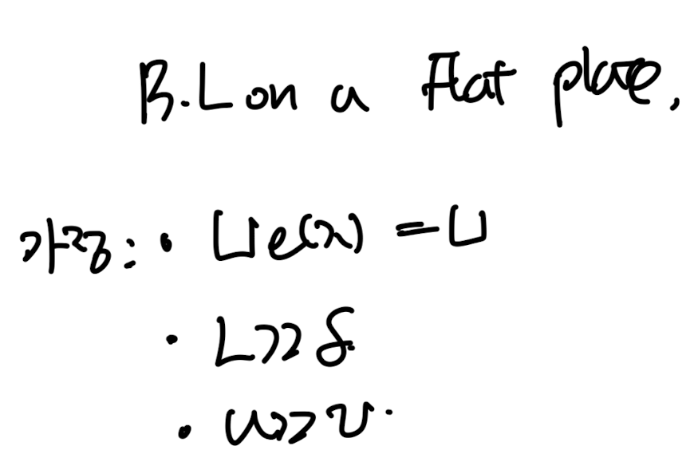
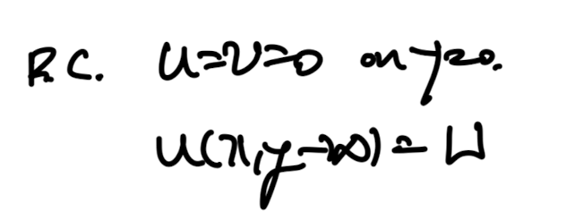

<!DOCTYPE html>
<html lang="ko">
<head>
  <meta charset="utf-8">
  <meta name="viewport" content="width=device-width, initial-scale=1">
  <title>Ch6 Boundary layer theory part2 - Blasius solution | Sehyeog Kim</title>
  <link rel="stylesheet" href="../../../../assets/css/style.css">
</head>
<body>
  <header class="mobile-header">
    <span class="site-title">Sehyeog Kim</span>
    <button class="menu-toggle" aria-label="Menu">&#9776;</button>
  </header>
  <div class="sidebar-overlay"></div>

  <div class="site-wrapper">
    <aside class="sidebar">
      <div class="sidebar-bg">
        
      </div>
      <div class="sidebar-profile">
        
        <h1 class="profile-name">Sehyeog Kim</h1>
        <p class="profile-bio">AI &amp; Computational Engineering<br>Personal Blog</p>
        <div class="profile-links">
          <a href="https://github.com/Sehyeogkim" target="_blank" rel="noopener">
            <svg viewBox="0 0 16 16" width="15" height="15" fill="currentColor"><path d="M8 0C3.58 0 0 3.58 0 8c0 3.54 2.29 6.53 5.47 7.59.4.07.55-.17.55-.38 0-.19-.01-.82-.01-1.49-2.01.37-2.53-.49-2.69-.94-.09-.23-.48-.94-.82-1.13-.28-.15-.68-.52-.01-.53.63-.01 1.08.58 1.23.82.72 1.21 1.87.87 2.33.66.07-.52.28-.87.51-1.07-1.78-.2-3.64-.89-3.64-3.95 0-.87.31-1.59.82-2.15-.08-.2-.36-1.02.08-2.12 0 0 .67-.21 2.2.82.64-.18 1.32-.27 2-.27.68 0 1.36.09 2 .27 1.53-1.04 2.2-.82 2.2-.82.44 1.1.16 1.92.08 2.12.51.56.82 1.27.82 2.15 0 3.07-1.87 3.75-3.65 3.95.29.25.54.73.54 1.48 0 1.07-.01 1.93-.01 2.2 0 .21.15.46.55.38A8.013 8.013 0 0016 8c0-4.42-3.58-8-8-8z"/></svg> GitHub
          </a>
        </div>
      </div>
      <nav class="sidebar-nav">
        <a href="/" class="nav-item nav-home">Home</a>
        <span class="nav-group-label">AI</span>
        <a href="/blog/ai/agentic-ai-theory/" class="nav-item">Agentic_AI_Theory<span class="nav-post-count">8</span></a>
        <a href="/blog/ai/deep-learning/" class="nav-item">Deep-learning<span class="nav-post-count">14</span></a>
        <a href="/blog/ai/machine-learning/" class="nav-item">Machine_Learning<span class="nav-post-count">11</span></a>
        <a href="/blog/ai/sensitivity-analysis/" class="nav-item">Sensitivity_Analysis<span class="nav-post-count">3</span></a>
        <span class="nav-group-label">BioMechanics</span>
        <a href="/blog/biomechanics/blood-flow-and-metabolism/" class="nav-item">Blood-Flow-and-Metabolism<span class="nav-post-count">12</span></a>
        <a href="/blog/biomechanics/cardiovascular-diseases/" class="nav-item">CardioVascular_Diseases<span class="nav-post-count">8</span></a>
        <span class="nav-group-label">Mechanical_Engineering</span>
        <a href="/blog/mechanical-engineering/computational-linear-algebra/" class="nav-item">Computational-Linear-Algebra<span class="nav-post-count">15</span></a>
        <a href="/blog/mechanical-engineering/computational-fluid-dynamics/" class="nav-item">Computational_Fluid_Dynamics<span class="nav-post-count">14</span></a>
        <a href="/blog/mechanical-engineering/continuum-mechanics/" class="nav-item">Continuum-Mechanics<span class="nav-post-count">9</span></a>
        <a href="/blog/mechanical-engineering/engineering-mathematics/" class="nav-item">Engineering_Mathematics<span class="nav-post-count">14</span></a>
        <a href="/blog/mechanical-engineering/finite-element-method/" class="nav-item">Finite-Element-Method<span class="nav-post-count">1</span></a>
        <a href="/blog/mechanical-engineering/fluid-mechanics/" class="nav-item">Fluid_Mechanics<span class="nav-post-count">18</span></a>
        <a href="/blog/mechanical-engineering/gas-dynamics/" class="nav-item">Gas_Dynamics<span class="nav-post-count">24</span></a>
        <a href="/blog/mechanical-engineering/heat-transfer/" class="nav-item">Heat-transfer<span class="nav-post-count">8</span></a>
        <a href="/blog/mechanical-engineering/solid-mechanics/" class="nav-item">Solid_Mechanics<span class="nav-post-count">25</span></a>
        <a href="/blog/mechanical-engineering/thermodynamics/" class="nav-item">Thermodynamics<span class="nav-post-count">14</span></a>
        <a href="/blog/mechanical-engineering/viscous-flow/" class="nav-item active">Viscous_Flow<span class="nav-post-count">28</span></a>
      </nav>
    </aside>

    <main class="main-content">
      <div class="breadcrumb"><a href="/">Home</a><span class="sep">/</span><a href="/blog/mechanical-engineering/">Mechanical_Engineering</a><span class="sep">/</span><a href="/blog/mechanical-engineering/viscous-flow/">Viscous_Flow</a><span class="sep">/</span><span>Ch6 Boundary layer theory part2 - Blasius solution</span></div>
<a href="/blog/mechanical-engineering/viscous-flow/" class="back-link">&larr; Back to Viscous_Flow</a>
<div class="page-header"><h1>Ch6 Boundary layer theory part2 - Blasius solution</h1></div>
<div class="post-meta"><span class="meta-item"><span class="meta-label">Date:</span> 2024-12-12</span><span class="meta-item"><span class="meta-label">Category:</span> Viscous_Flow</span><span class="meta-item"><span class="meta-label">Source:</span> <a href="https://jeffdissel.tistory.com/148" target="_blank" rel="noopener">link</a></span></div>
<article class="post-content"><p>이전 포스터 부터,<br />
우리는 boundary layer에 대해서 수학적으로 분석하고 있다.<br />
boundary layer thickness가 굉장히 얇다는 가정<br />
-&gt; Order of Magniutde를 활용하여<br />
다음의 Boundary layer Equation을 이전 포스터에서 증명하였다.<br />
<br />
Boundary layer Equation w/ too small boundary layer thickness.<br />
이번 시간에는, Flat plate geometry에서<br />
<br />
유체가 x방향으로<br />
constant<br />
하게 흐르는 경우를 살펴보자.<br />
<br />
이때, boundary layer equation에서<br />
dU/dx = 0 으로 소거가 된다.<br />
<br />
그리고 Boundary condition은 다음과 같다.<br />
<br />
여기서 Ch4 에서 사용하였던,<br />
Similarity Solution개념을 사용하자.</p>
<hr />
<h1>similiarity solution이란?</h1>
<p>No length time scale 인 상황에서,<br />
가지고 있는 independent variable를 조합<br />
-&gt; 새로운 dimensionless variable 만들고,<br />
가지고 있는 방정식의<br />
variable 수를 줄이는 방식.<br />
(쉽게 말해, 우리가 풀고자하는 공학문제의<br />
변수의 갯수를 무차원화 시켜 축소시키는 것이다.)</p>
<hr />
<p>결국, u는<br />
u = g(U, y, x)에 관한 함수인데,<br />
여기서 우리가 관심있는,<br />
x -&gt;<br />
δ(x)<br />
로 바꿔준후,<br />
dimensionless 작업을 해주어,<br />
η(에타, 새롭게 정의한무차원수)에<br />
관한 함수로 나타내자.<br />
<br />
ξ(x) = δ(x) , boundary layer thickness.<br />
이후, u를 y로 적분 해주어,<br />
( u = dψ/dy , ψ(x=0) = 0 )<br />
stream function (ψ)<br />
을 나타내면,<br />
<br />
ξ(x) = δ(x) , boundary layer thickness.<br />
이후는, 사실상 저 similarity solution을 아까 정리한,<br />
flat plate boundary layer Eq에 대입하는<br />
'수식파티' 이다.<br />
<br />
Boundary layer Eq.</p>
<hr />
<p>수식파티 하기전에, <br />
이번 블로그에서 가장 핵심적인 질문은<br />
어떻게 Blasius 라는 사람은 저렇게 치환을 할 생각을 했을까?<br />
그리고 저 치환이 의미가 있는 이유가 뭘까?<br />
이다.<br />
밑은 위 질문의 답을 내고자,<br />
similairty solution에서 무차원수를 치환하는 방법을 교재에서 찾은 내용이다.<br />
<br />
완벽하게 이해하지는 못했지만,<br />
정리한 바로는<br />
시간과 공간은 각각 independent variable,<br />
공간에서도 각 기저 x,y,는 independent variable이다.<br />
각각은 독립적이지만,<br />
x를 통해 -&gt; y방향으로의 길이 즉<br />
δ(x)를 정의하고,<br />
y/<br />
δ(x) 로 나누어 주어(같은 기저의 길이변수이므로)<br />
무차원화 시킬 수 있다.<br />
하지만 이러한 작업은<br />
특정 length scale이 존재하지 않을때만,<br />
가능하다.<br />
이유는 단순하다,<br />
굳이 x를 사용해서 y를 무차원화 시키지 않고,<br />
이미 가지고 있는 length scale로 무차원화 시키므로,<br />
indendent variable 수가 감소하지 않는다.<br />
예를들어, 두개의 flat plat 사이를 유체가 흐르는 경우,<br />
두 flat plate사이의 거리 라는 특정한 length(d) 가 있을 것이다.<br />
이때, y/d 이런식으로<br />
혹은 unsteady인 상황에서라면,<br />
y/Ut 이런식으로 무차원화 시킬 수 있다.</p>
<hr />
<p>이제 수식파티를 진행하자.<br />
본업으로 복귀.<br />
6번식에 대입하기전에, u,v 그리고 미분항들을<br />
미리 작성해놓자.<br />
<br />
<br />
<br />
u,v 유도<br />
<br />
u 미분 term.<br />
이제 6번식에 대입해주자.<br />
<br />
이후, 정리한 후 여기서 무차원 방정식의 계수는 비례해야한다.<br />
(단위 맞추기 위해)<br />
<br />
<br />
<br />
<br />
BC을 적용시키고, C는 사실상 위 식을 만족하기만 하면 되기 때문에.<br />
<br />
<br />
<br />
<br />
이를 Similairty variable에 대입해주자.<br />
<br />
그리고 아까 까지 유도하였던, f에 관한 ODE에 대입.<br />
<br />
이제 3차 non linear ODE를 computational method로 풀게되면,<br />
최종적으로, 밑의<br />
η와 u/U의 그래프가 도출된다.<br />
<br />
여기서 우리가 알고 싶은 것은,<br />
boundary layer thickness(delta)이다.<br />
boundary layer thickness의 정의에 따라,<br />
u = U 가 되는 순간에서의 높이 y값이<br />
바로 boundary layer thickness이지만,<br />
위 그래프 solution을 보면 y 가 무한일때 성립하므로,<br />
u = 0.99U일때 y = 4.92(from graph)를<br />
boundary layer thickness라고 정의하자.<br />
<br />
드디어, boundary layer thickness - x와의 관계식을<br />
구했고, 이를 Blasisus solution이라고 한다.<br />
<br />
이전 포스터에서<br />
displacement thickness, momentum thickness 식에 대해서 배웠었고,<br />
우리는 blasius solution을 가지고 각각 유도할 수 있다.<br />
뿐만아니라<br />
Momentum thickness -&gt; Shear stress ( Integral relation)<br />
shear stress -&gt; Skin friction coefficient(Cf)<br />
Skin friction coefficeint(Cf) -&gt; Drag coefficient (Cd)<br />
Cd -&gt; D(Drag force)<br />
까지 유도할 수 있다.<br />
</p></article>
      <footer class="site-footer">
        <p>&copy; 2026 Sehyeog Kim</p>
      </footer>
    </main>
  </div>
  <script src="../../../../assets/js/main.js"></script>
</body>
</html>